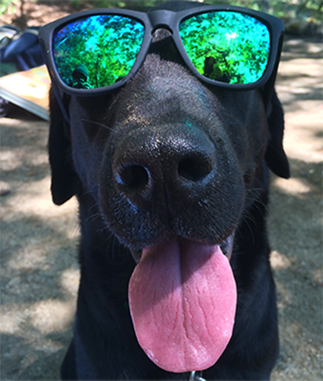
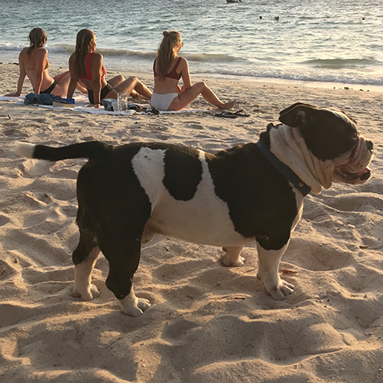
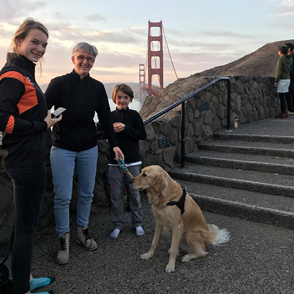
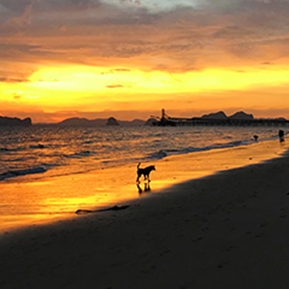
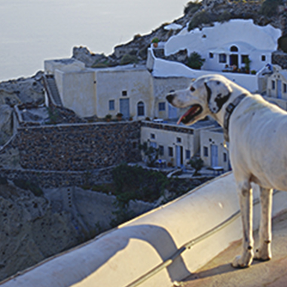
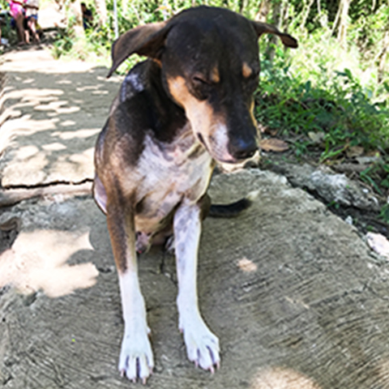
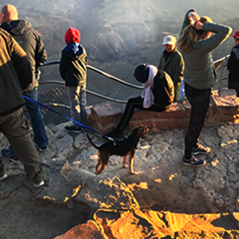
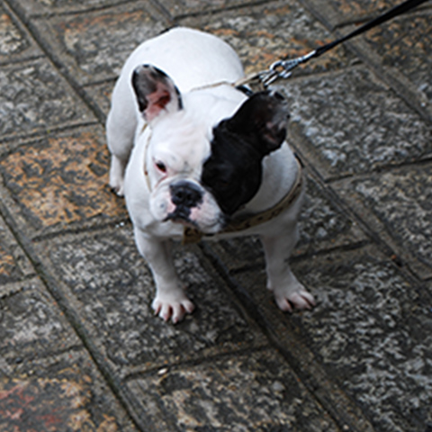
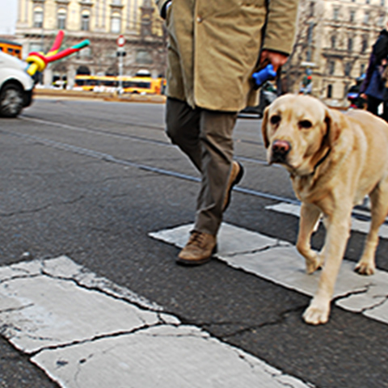

いぬになりたい。
ABOUT

ハシモト ケント
元々SIerのSEやってました。今、目指しているのはWeb系バックエンドのエンジニアですが、Webデザインとフロントエンドの勉強をしています。突然ですけど、犬っていいですよね。なんか自由で。なんか気が抜けてて。僕は旅をしてる時、景色でも人でも猫でもなく、犬ばっかり写真に撮ってます。そんなつもりはなかったのに、いつの間にか。あぁ本当は犬になりたい。まぁ既に会社の犬ではあるんですけども。
FAVORITES
-

ホントは後ろの女の子を撮りたかっただけです。
@KohTao Thailand
-

犬だけ撮るつもりだったのに。良い笑顔の家族。
@Sanfrancisco USA
-

日が落ちるギリギリで現れ、消えていった犬。
@Krabi Thailand
-

どこにでも犬っているんだなぁと思った夏。
@Santorini Greece
-

確実に寝てるんだけど、頑なに横にならない犬。
@Bohol Philippines
-

グランドキャニオンなのに景色を撮らない選択。
@GrandCanyon USA
-

ブルドックがいると、おっ!てなりますよね。
@Mont Saint-Michel France
-

どういう感情の表情なのだろうかそれは。
@Torino Italy
ACCESS
忠犬として有名な秋田犬、ハチ公の銅像がある人気の待ち合わせ場所。〒150-0043 東京都渋谷区道玄坂２丁目１
時間： 24 時間営業
電話： 03-3462-8311
NEWS
-
アル、去勢手術を受ける。
先住犬との折り合いがつかず、熟慮の末、去勢手術を決行。現状、改善は見られず。
-
通算3匹目の犬を飼う。
生後3ヶ月の黒のラブラドールレトリバーを家に迎える。名前は「アル」。